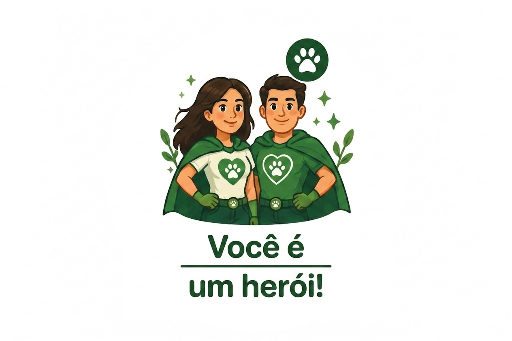
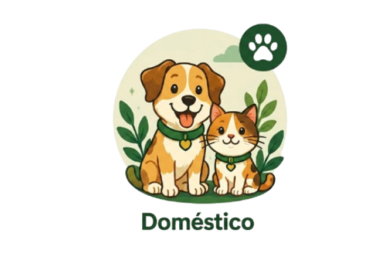
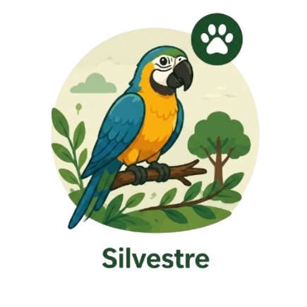
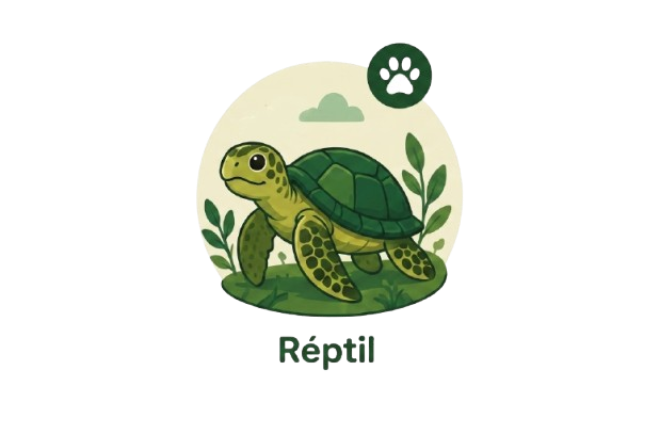
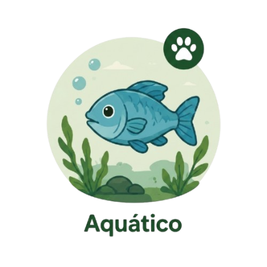
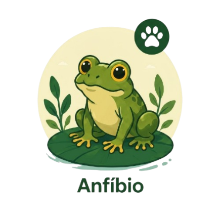

Promover proteção animal com um sistema acessível, inclusivo e de confiança.
Atividade da sua conta
Carregando suas ocorrências e conversas…
Minhas ocorrências
Conversas recentes
Abrir conversasPlataforma de resgate e adoção
Ajude um animal a encontrar o caminho de volta.
Encontre animais perdidos, registre animais encontrados e conecte-se a redes de resgate, adoção e proteção animal.
Rede preparada para proteção animal

Você está procurando um animal?
Encontre ocorrências por tipo, situação e cidade
Categorias rápidas
Filtre por tipo de ocorrência

Doméstico
Encontre cães, gatos e outros animais que convivem com as pessoas.

Silvestre
Ajude a identificar e proteger animais da fauna silvestre.

Réptil
Encontre e identifique répteis que precisam de ajuda.

Aquático
Ajude animais encontrados em rios, lagos, mares e outros ambientes aquáticos.

Anfíbio
Ajude a proteger sapos, rãs e outros anfíbios.
Ocorrências próximas
Abrir mapa
Mapa de casos ativos
Veja onde há mais animais perdidos, encontrados e queued para resgate.
Como funciona
Uma jornada simples para ajudar animais
Busque ocorrências por espécie e localização.
Envie uma ocorrência com fotos e descrição.
Compartilhe com voluntários e instituições parceiras.
Solicite apoio para casos urgentes ou silvestres.
Acompanhe o status até o animal estar seguro.
Animais esperando por um lar
Conheça alguns cães e gatos prontos para adoção
Uma rede que protege
Parceiros que atuam em resgate, adoção e proteção
Nem todo resgate precisa ser feito sozinho.
Solicitar orientação
Se for um animal silvestre ou situação de risco, mantenha distância e peça ajuda.
O sistema orienta e conecta você aos profissionais e órgãos responsáveis para proteger tanto o animal quanto você.